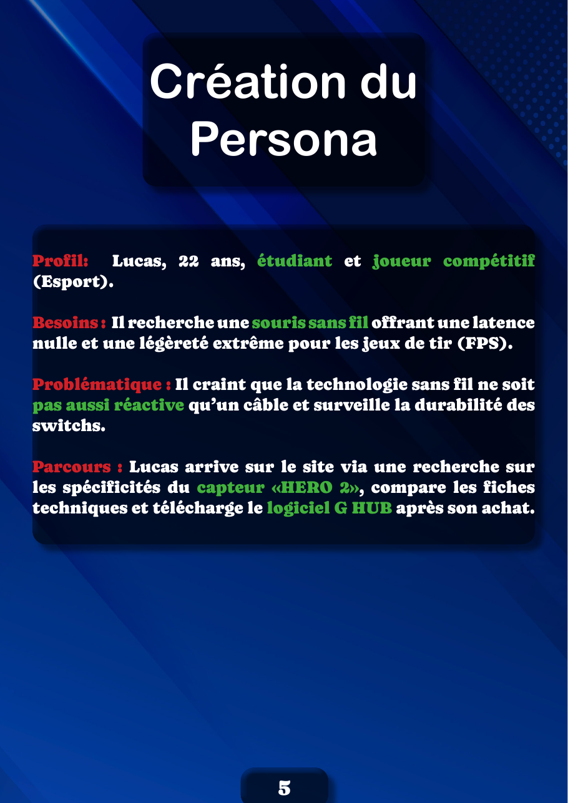
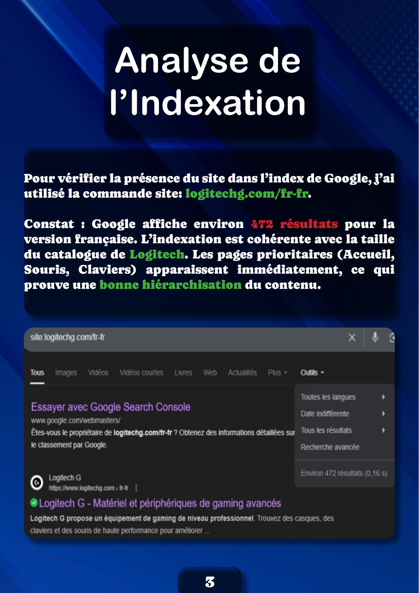
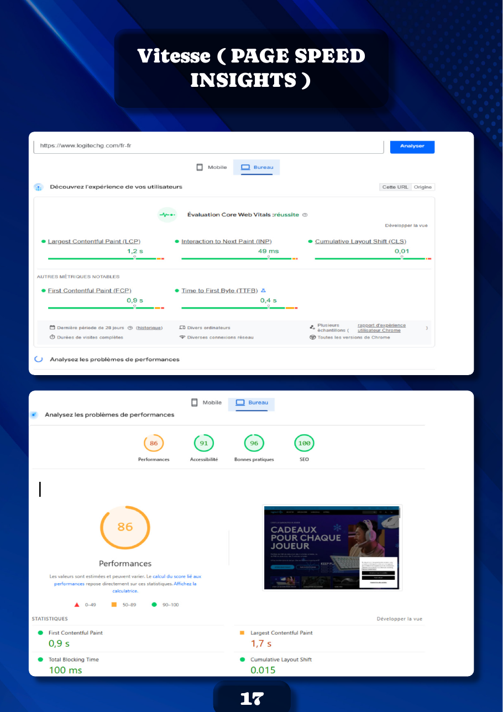

Projet 01 — Audit
Audit SEO
Logitech G
L'exercice était volontairement ouvert : réaliser l'audit SEO d'un site de notre choix. J'ai choisi logitechg.com/fr-fr, le site de la gamme gaming de Logitech. Deux raisons à ce choix : un catalogue large (souris, claviers, casques…) qui donne de la matière à analyser, et un marché ultra-concurrentiel où le référencement se joue sur des détails. Travailler sur un site réel et exigeant me permettait de confronter la théorie SEO à un cas qui ne pardonne pas l'à-peu-près.
Produire un audit complet, et surtout actionnable : ne pas me contenter de constats, mais déboucher sur des préconisations. J'ai donc balayé l'ensemble de la chaîne SEO :
- indexation et présence dans Google ;
- contenu on-page (structure HTML, balises méta) ;
- singularité du contenu (duplicate content, images dupliquées) ;
- analyse sémantique ;
- performances et validité technique.
J'ai commencé par cadrer la cible. Plutôt que de partir des outils, j'ai construit un persona — Lucas, 22 ans, joueur compétitif à la recherche d'une souris sans fil ultra-réactive — pour lire le site avec les yeux de son audience réelle, et juger la pertinence du contenu en fonction de son parcours.

Côté indexation, la commande site: remonte ~472 pages pour la version FR, avec les pages prioritaires (accueil, souris, claviers) bien hiérarchisées. L'analyse on-page montre une structure HTML5 saine (header, nav, main, footer), un title à 56 caractères (idéal), mais une méta-description trop longue (202 caractères) qui sera coupée sur mobile.

L'outil Alyze.info a révélé deux points de vigilance : un taux de phrases similaires de 35% et une multiplication des balises H1 (notamment dans les bannières), qui dilue le mot-clé principal. J'ai aussi relevé de nombreuses images non optimisées (noms de fichiers génériques, attributs alt vides) — un frein direct au référencement dans Google Images.
Sur le plan technique, le validateur W3C est bloqué par une sécurité serveur (erreur 500 « Header line too long »), mais PageSpeed Insights donne de bons signaux : Core Web Vitals validés, performances à 86 et SEO à 100 sur desktop.

L'audit débouche sur trois préconisations claires : raccourcir les méta-descriptions trop longues, continuer à produire des visuels exclusifs (lifestyle, rendus 3D) pour contrer la duplication par les revendeurs, et optimiser le chargement des scripts pour la fluidité mobile.
Je considère maîtriser la mécanique de l'audit : choisir les bons outils, lire les résultats et les traduire en actions. Je me situe en voie d'acquisition sur l'interprétation stratégique plus fine — relier ces constats à une vraie analyse concurrentielle et à un plan de mots-clés. Ma piste d'amélioration : pousser l'étude du maillage interne et de la sémantique concurrentielle, pour passer de « ce qui ne va pas » à « comment dépasser tel concurrent sur telle requête ».